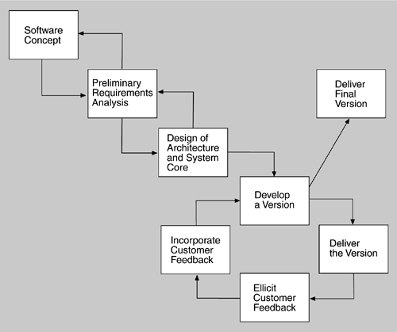

| [ Team LiB ] |
|
7.1 Architecture in the Life CycleAny organization that embraces architecture as a foundation for its software development processes needs to understand its place in the life cycle. Several life-cycle models exist in the literature, but one that puts architecture squarely in the middle of things is the Evolutionary Delivery Life Cycle model shown in Figure 7.1. The intent of this model is to get user and customer feedback and iterate through several releases before the final release. The model also allows the adding of functionality with each iteration and the delivery of a limited version once a sufficient set of features has been developed. (For more about this life-cycle model, see For Further Reading.) Figure 7.1. Evolutionary Delivery Life Cycle WHEN CAN I BEGIN DESIGNING?The life-cycle model shows the design of the architecture as iterating with preliminary requirements analysis. Clearly, you cannot begin the design until you have some idea of the system requirements. On the other hand, it does not take many requirements in order for design to begin. An architecture is "shaped" by some collection of functional, quality, and business requirements. We call these shaping requirements architectural drivers and we see examples of them in our case studies. The architecture of the A-7E discussed in Chapter 3 is shaped by its modifiability and performance requirements. The architecture for the air traffic control system discussed in Chapter 6 is shaped by its availability requirements. In the flight simulator software presented in Chapter 8, we will see an architecture shaped by performance and modifiability requirements. And so on. To determine the architectural drivers, identify the highest priority business goals. There should be relatively few of these. Turn these business goals into quality scenarios or use cases. From this list, choose the ones that will have the most impact on the architecture. These are the architectural drivers, and there should be fewer than ten. The Architecture Tradeoff Analysis Method of Chapter 11 uses a utility tree to help turn the business drivers into quality scenarios. Once the architectural drivers are known, the architectural design can begin. The requirements analysis process will then be influenced by the questions generated during architectural design—one of the reverse-direction arrows shown in Figure 7.1. |
| [ Team LiB ] |
|